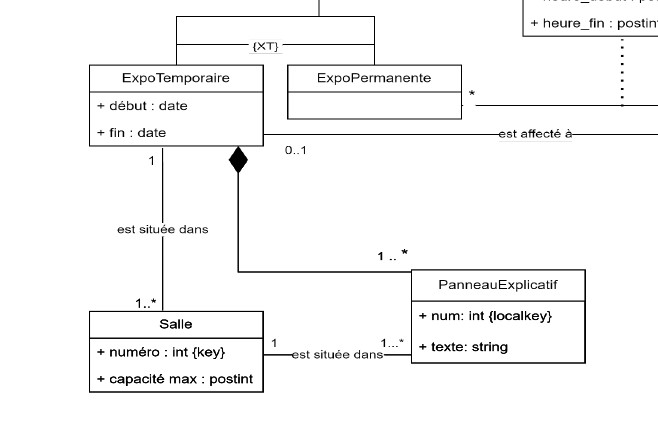

Duration
February 2023 - July 2023
Location
Université de Technologie de Compiègne
Description
As part of a course on relational and non-relational databases, I contributed to developing a comprehensive museum management system for the Louvre. This project aimed to create a robust database and interface for managing artworks, exhibitions, and guides. My primary responsibilities included designing UML diagrams and implementing the Python backend. The system was designed to handle various artwork types, manage both permanent and temporary exhibitions, track artwork loans, and coordinate guide schedules. I created detailed UML diagrams to model complex relationships between entities such as artworks, exhibitions, museums, and guides, serving as the foundation for our database schema.
On the Python side, I developed the backend logic to interact with both relational and non-relational databases, implementing CRUD operations, complex queries, and data analysis functions. This project enhanced my skills in database design, UML modeling, and Python programming while providing valuable experience in translating real-world requirements into a functional data management system. It also deepened my understanding of the differences and applications of relational and non-relational database structures in a practical context.